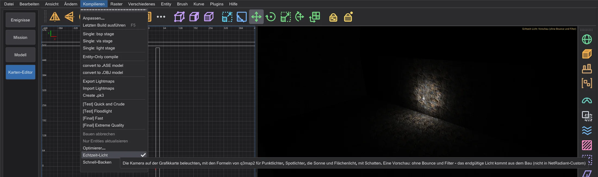
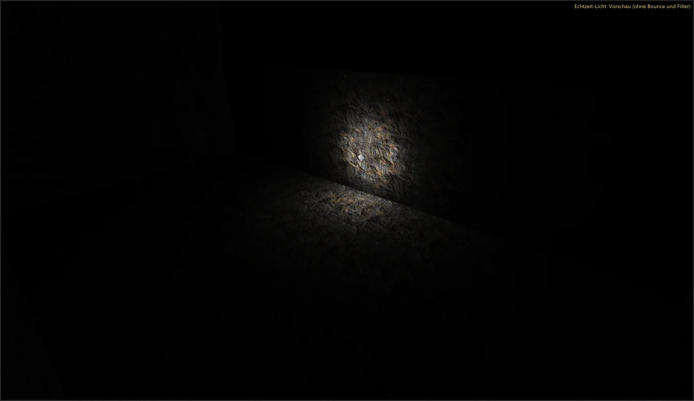
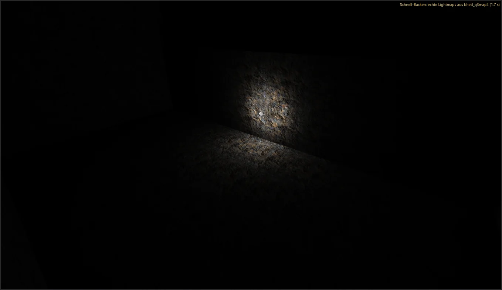

Karten-Editor: Tempo und Echtzeit-Licht
Licht sehen, während man baut: Echtzeit-Licht beleuchtet die Kamera auf der Grafikkarte, Schnell-Backen baut die Karte im Hintergrund und zeigt die echten Lightmaps. Bauen und Bearbeiten wurden schneller - mit demselben Ergebnis wie vorher.
Echtzeit-Licht#

- 1
Schalte Kompilieren > Echtzeit-Licht ein. Die Kamera (Darstellung texturiert) wird von den Lichtern der Karte beleuchtet - Punktlichter, Spotlichter, die Sonne des Himmels-Shaders (
q3map_sun) und Flächenlicht (q3map_surfacelight) - mit den Formeln von q3map2 -light und mit Schatten. - 2
Verschiebe ein Licht oder ändere seine Schlüssel: die Kamera folgt sofort. Bis zu 64 Lichter beleuchten jedes Bild (die stärksten an der Kamera), 32 davon mit Schattenwürfeln.

Schnell-Backen#
- 1
Schalte Kompilieren > Schnell-Backen ein. Zwei Sekunden nach der letzten Änderung baut bhed_q3map2 die Karte in einem temporären Ordner -
-meta,-vis -fast(wenn die Karte nicht leckt) und-light -fast- mit niedriger Priorität, der Editor bleibt flüssig. - 2
Ist er fertig, zeigt die Kamera die echten Lightmaps dieses Baus; oben rechts steht Schnell-Backen: echte Lightmaps aus bhed_q3map2 ( s). Jede Änderung bricht einen laufenden Bau ab und startet nach der Pause einen neuen. Deine Karte und eine .bsp daneben bleiben unberührt.

Das Schnell-Backen schreibt dieselben Lightmaps, dasselbe Lichtgitter und dieselbe Sichtbarkeit wie bhed_q3map2 auf der Kommandozeile mit denselben Schaltern - der Selbsttest vergleicht die Dateien. Schneller als ein voller Bau ist es durch -fast und die fehlenden Bounce-Durchgänge; für die fertige Karte nimm das Menü Kompilieren.
Was schneller wurde#
Jede Änderung wurde vorher und nachher gemessen (Median aus drei Läufen, niedrige Priorität, dieselben Karten) und ergibt dasselbe: die .bsp von -bsp und -light ist Byte für Byte die eines Baus mit einem Thread der Stufe 6, die gespeicherten Karten sind gleich.
- -light nutzt alle Kerne für die Lightmaps (Licht für Licht in Blöcken, das adaptive Supersampling vorhergesagt und exakt geprüft) und für das Lichtgitter.
- -bsp: die T-Junction-Behebung sucht parallel und wendet der Reihe nach an; gleiche Punkte im Lichtgitter werden über Eimer gefunden statt durch eine Suche über alle Punkte.
- -vis bleibt wie in NetRadiant-Custom: mit mehreren Threads kann es von Bau zu Bau etwas abweichen, mit
-threads 1ist es immer gleich. Zwei Wege, es mit mehreren Threads gleich zu machen, wurden ausprobiert und gemessen; beide waren langsamer. - Editor: Auswahl umkehren, die Auswahlabfrage der Ansichten und die NPC-Dateien des Optimierers (im Hintergrund gelesen).
| Schritt | Karte | NetRadiant-Custom | vorher (Stufe 6) | jetzt |
|---|---|---|---|---|
| BSP (alle Threads) | duel_pit | 0.20 s | 0.20 s | 0.20 s |
| VIS (alle Threads) | duel_pit | 0.15 s | 0.10 s | 0.10 s |
| LIGHT (alle Threads) | duel_pit | 0.66 s | 0.66 s | 0.61 s |
| BSP (1 Thread) | duel_pit | 0.20 s | 0.20 s | 0.20 s |
| VIS (1 Thread) | duel_pit | 0.15 s | 0.15 s | 0.15 s |
| LIGHT (1 Thread) | duel_pit | 3.02 s | 3.33 s | 3.08 s |
| BSP (alle Threads) | mp__duel1 | 0.36 s | 0.31 s | 0.31 s |
| VIS (alle Threads) | mp__duel1 | 0.15 s | 0.11 s | 0.10 s |
| LIGHT (alle Threads) | mp__duel1 | 2.53 s | 2.99 s | 1.92 s |
| BSP (1 Thread) | mp__duel1 | 0.35 s | 0.31 s | 0.31 s |
| VIS (1 Thread) | mp__duel1 | 0.20 s | 0.15 s | 0.16 s |
| LIGHT (1 Thread) | mp__duel1 | 8.72 s | 9.68 s | 9.63 s |
| BSP (alle Threads) | t1_inter | 0.31 s | 0.26 s | 0.26 s |
| VIS (alle Threads) | t1_inter | 0.15 s | 0.10 s | 0.10 s |
| LIGHT (alle Threads) | t1_inter | 0.31 s | 0.26 s | 0.31 s |
| BSP (1 Thread) | t1_inter | 0.30 s | 0.25 s | 0.26 s |
| VIS (1 Thread) | t1_inter | 0.15 s | 0.11 s | 0.10 s |
| LIGHT (1 Thread) | t1_inter | 0.31 s | 0.31 s | 0.31 s |
| BSP (alle Threads) | md_ch_ben | 0.81 s | 0.71 s | 0.76 s |
| VIS (alle Threads) | md_ch_ben | 2.77 s | 2.27 s | 2.23 s |
| LIGHT (alle Threads) | md_ch_ben | 3.73 s | 4.24 s | 2.58 s |
| BSP (1 Thread) | md_ch_ben | 0.86 s | 0.71 s | 0.71 s |
| VIS (1 Thread) | md_ch_ben | 30.53 s | 24.90 s | 24.60 s |
| LIGHT (1 Thread) | md_ch_ben | 12.66 s | 12.65 s | 12.76 s |
| BSP (alle Threads) | kejim_post | 4.74 s | 4.59 s | 4.14 s |
| VIS (alle Threads) | kejim_post | 745.40 s | 621.47 s | 573.70 s |
| LIGHT (alle Threads) | kejim_post | 9.18 s | 10.28 s | 7.21 s |
| BSP (alle Threads) | duel_mos_espa | 53.35 s | 44.86 s | 19.57 s |
| Schritt | Karte | vorher (Stufe 6) | jetzt |
|---|---|---|---|
| Auswahl umkehren (alles wählen) | duel_mos_espa | 29.74 s | 5.2 ms |
| Auswahl umkehren (alles wählen) | kejim_post | 1.34 s | 0.7 ms |
| Auswahl umkehren (alles wählen) | md_am_sith | 1.36 s | 0.8 ms |
| .bsp öffnen (dekompilieren) | duel_mos_espa | 7.71 s | 7.98 s |
| .bsp öffnen (dekompilieren) | kejim_post | 2.01 s | 2.64 s |
| .bsp öffnen (dekompilieren) | md_am_sith | 3.29 s | 3.42 s |
| .map laden | duel_mos_espa | 1.31 s | 1.29 s |
| .map laden | kejim_post | 662.5 ms | 717.4 ms |
| .map laden | md_am_sith | 805.6 ms | 827.7 ms |
| Texturen geladen | duel_mos_espa | 1.64 s | 1.80 s |
| Texturen geladen | kejim_post | 4.2 ms | 821.6 ms |
| Texturen geladen | md_am_sith | 1.93 s | 2.16 s |
| .map speichern | duel_mos_espa | 815.8 ms | 745.4 ms |
| .map speichern | kejim_post | 142.5 ms | 173.7 ms |
| .map speichern | md_am_sith | 175.9 ms | 189.6 ms |
| Alles verschieben | duel_mos_espa | 285.1 ms | 329.4 ms |
| Alles verschieben | kejim_post | 53.2 ms | 72.0 ms |
| Alles verschieben | md_am_sith | 62.9 ms | 68.0 ms |
| Verschieben rückgängig | duel_mos_espa | 294.1 ms | 353.0 ms |
| Verschieben rückgängig | kejim_post | 26.2 ms | 36.4 ms |
| Verschieben rückgängig | md_am_sith | 33.3 ms | 32.6 ms |
| CSG Subtract rückgängig | duel_mos_espa | 171.1 ms | 207.4 ms |
| CSG Subtract rückgängig | kejim_post | 8.6 ms | 7.9 ms |
| CSG Subtract rückgängig | md_am_sith | 12.1 ms | 10.1 ms |
| Optimierer Start | duel_mos_espa | 48.6 ms | 39.2 ms |
| Optimierer Start | kejim_post | 10.2 ms | 13.1 ms |
| Optimierer Start | md_am_sith | 14.7 ms | 11.8 ms |
| Optimierer Prüfung | duel_mos_espa | 1.47 s | 1.34 s |
| Optimierer Prüfung | kejim_post | 162.4 ms | 201.8 ms |
| Optimierer Prüfung | md_am_sith | 303.7 ms | 257.4 ms |
| Wechsel in den Karten-Editor bis die Spieldaten bereit sind | - | 273.3 ms | 258.1 ms |
| Vorschau: Szene vorbereiten (md_am_sith) | - | 1.44 s | 1.40 s |
| Vorschau: Bildzeit Szene (Mittel) | - | 15.0 ms | 15.0 ms |
| Vorschau: Bildzeit Flug (Mittel) | - | 8.2 ms | 8.1 ms |
kejim_post „Texturen geladen“ war vorher nur so schnell, weil Stufe 6 Jedi Outcast in diesem Lauf ohne seine Ordner lud (0 Shader, jede Fläche mit dem Ersatzbild - der in Stufe 7 behobene Fehler); jetzt werden die 1187 Shader und ihre Bilder geladen. Nicht geänderte Schritte schwanken von Lauf zu Lauf um etwa 20 %.